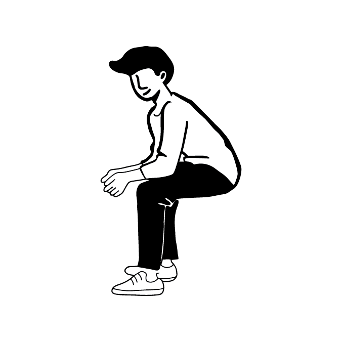
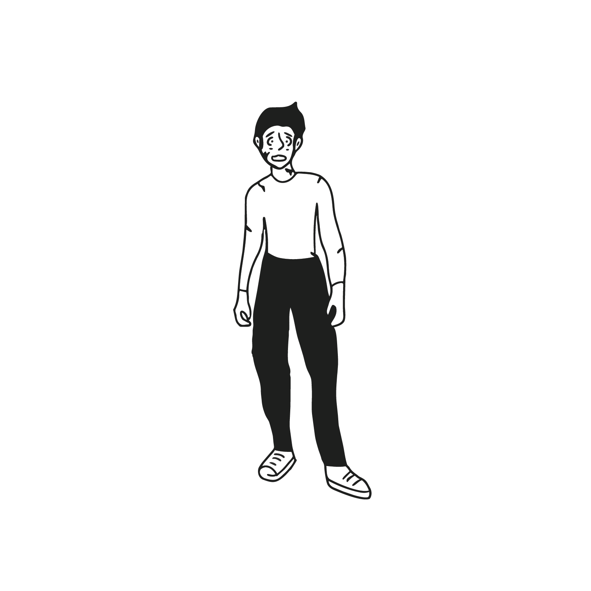

A Journey Through Changing Landscapes
Learning JavaScript One Terrain at a Time
Standing at the edge looking outward. The sun hasn't risen yet. In the distance, barely visible through morning haze, stretches an impossible vista. Dark forests, gray mountains, a sliver of coastline, endless golden sand, and above it all, a night sky not yet visible. The path winds through every terrain. From here, it looks impossibly long. But here's the thing: at the threshold between not knowing and beginning to learn, the answer becomes clear. One landscape at a time. One concept at a time. Behind, the city hums. Time to turn around and see where this adventure actually begins.




The City
Lost in the Chaos
Standing in the middle of the city now and wow, it's overwhelming. Screens flash with code: getElementById, addEventListener, forEach. Every word looks important. None mean anything yet. Someone mentions "variables" and maybe one word in three gets caught. Another talks about "event listeners" and the meaning is completely unclear. A traffic light cycles through colors. There's clearly a system, but the rules are invisible. People navigate effortlessly while from this position, it's just noise. Buildings tower overhead, each labeled: Functions. Arrays. Objects. Promises. The words are English, but they might as well be another language. Lost, overwhelmed, not sure what questions to ask. But here's the exciting part: somewhere in this chaos, there's a first step. A first tool that makes everything click.
First Contact
The City Lights Turn On
Talking to the Browser
Before this, code was a black box. Type something into a file, refresh the browser, and either something happened or it didn't. If it broke, no idea why. Just guessing and refreshing over and over. Then learning about console.log happened. Game changer. Suddenly seeing inside the code became possible. Like flipping a switch and watching the streetlights connect to their power source. console.log lets the browser show what's actually happening. Check if a variable holds the right value. See if code is even running. Watch values change in real time. The city was always there. Now the lights are on and the connections are visible.
// Is the browser listening?
console.log("Hello! Can you hear me?");
// Output in console: Hello! Can you hear me?
// What's stored in this variable?
let cityName = "Spokane";
console.log(cityName);
// Output: Spokane
// Is this line of code even running?
console.log("Yes, this code is working!");
// Output: Yes, this code is working!
// Check what's in multiple variables
let firstName = "Michael";
let lastName = "Bushyeager";
console.log(firstName, lastName);
// Output: Michael BushyeagerConsole Output:
→ Hello! Can you hear me?
→ Spokane
→ Yes, this code is working!
→ Michael Bushyeager
What Shifted
Before console.log, the browser was silent. Writing code felt like shouting into the void and hoping something happened. After learning console.log, it became a conversation. If a variable held the wrong value, seeing it became possible. If code wasn't running, knowing immediately became possible. If something broke, finding where it broke became possible. This was the moment JavaScript stopped being mysterious and started being debuggable. The city was still complex, still had systems to learn, but now the lights were on. Now seeing the connections was possible. Now having a flashlight in the dark existed. console.log became the first tool that made JavaScript feel manageable instead of overwhelming.


The Forest
Finding the First Landmarks
Escaping the city and stepping into the forest. It's quieter here. The air feels clearer. At first, every tree looks the same. Oak, pine, maple... they're all just "tree." Every path branches into more paths. Walking down one trail, then another, trying to remember the route back. Which clearing was this? It all blurs together. Getting turned around easily. No reference points. "Go back to that tree by the thing" doesn't help anyone. Then something shifts. Learning to mark the trees. Carving into bark: Oak Grove. Walking further: River Crossing. One more: Sunset Clearing. Suddenly wandering stops. Pointing to a place and saying its name becomes possible. Going back to Sunset Clearing works because it got named. The forest is still big, still complex, but now it has reference points. With names, building a mental map can begin. The forest becomes navigable.
Naming Things
Variables Create Landmarks
Why Names Matter
Variables were the first concept that actually made sense after the overwhelming city. Here's what they do: they let you store a value and give it a name. Without variables, you write the same value over and over: Color #2B4C7E in the title, Color #2B4C7E in the button, Color #2B4C7E in the link, Color #2B4C7E twenty more times. Then you need to change that color. Now you have to find all twenty places and update them manually. Easy to miss one. Easy to make mistakes. With variables, you write it once: let brandColor = "#2B4C7E". Then everywhere you need it, you just use brandColor. Change that one line at the top? Everything using it updates automatically. Variables are named landmarks. They make it possible to find things again and change them in one place instead of hunting through the whole forest.
// Without variables - scattered everywhere
document.querySelector('.title').style.color = "#2B4C7E";
document.querySelector('.button').style.color = "#2B4C7E";
document.querySelector('.link').style.color = "#2B4C7E";
// With variables - one source of truth
let brandColor = "#2B4C7E";
document.querySelector('.title').style.color = brandColor;
document.querySelector('.button').style.color = brandColor;
document.querySelector('.link').style.color = brandColor;
// Need to change it? Update once:
brandColor = "#FF5733";
// Everything using brandColor updates automaticallyVariables = Named Landmarks
Change once → Updates everywhere
What Shifted
Code isn't about memorizing values. It's about creating named landmarks you can return to. Once naming things was possible, code stopped being a tangled mess and started being navigable. The forest has structure now. Paths have names. Finding things again became possible.

The Mountains
Choosing Your Path
Climbing into the mountains and reaching a fork in the trail. One path leads into bright sunlight. Steep, exposed, warm rocks ahead. The other descends into cool shade. Gentler slope, stones covered in moss, filtered light everywhere. Realizing the landscape can change based on choices made. This is different. Taking the sunny path: warm rocks underfoot, clear views for miles, intense light making everything sharp. It's beautiful but demanding. Backtracking to try the shaded route: immediately cooler air, soft moss, dappled light creating patterns. Gentler, quieter. Also beautiful but completely different. Same mountain, different experience. The mountain responds to decisions. Which path chosen determines which mountain gets seen. And here's the best part: the choice isn't locked in. Backtracking works. The mountain has both states available. Control exists over which version appears. You get to choose.
The Switch
Conditionals & classList
Making Decisions
Before conditionals, code ran the same way every time. The page loaded, displayed one thing, and that was it. Then learning if/else statements and classList happened. Mind blown. Suddenly the page could branch. It could make decisions. If the user clicks this button, show this thing. If it's dark mode, change the colors. If the form is empty, display an error. The page wasn't stuck in one state anymore. It could respond to conditions and show different versions of itself. classList.toggle especially clicked when seeing it work: same button, different class, completely different appearance. The page was alive now.
// The fork in the path - making decisions
let userChoice = "sunny"; // or "shaded"
if (userChoice === "sunny") {
mountain.classList.add("bright-path");
console.log("Taking the sunny route");
} else {
mountain.classList.add("shaded-path");
console.log("Taking the shaded route");
}
// Toggle between states
mountainView.addEventListener("click", function() {
mountainView.classList.toggle("night-mode");
});
// Same mountain, different states
// .bright-path → warm colors, full sun
// .shaded-path → cool colors, filtered light
// .night-mode → stars visible, darker tonesConditionals = Decision Points
classList = Switching Between States
What Shifted
Websites aren't static. They're responsive systems that adapt based on conditions you set. The shift was understanding control over which version of the page gets seen. Same element, different class, completely different appearance. The mountain responds to decisions. The page responds to logic.

The Coast
Listening and Responding
Reaching the coast where ocean meets land. At first, just watching. Waves roll in and out on their own rhythm. Then stepping forward. A wave rushes up to meet feet, foam spreading everywhere. Whoa. Step back and it retreats. Try again. Wave rushes in. Step back, it recedes. This is wild. Picking up a smooth stone. Throwing it into calm water. Ripples spread in perfect circles from the impact, expanding outward. The ocean responds. Walking along the shore. Footprints press into wet sand. Another wave comes, erasing them, smoothing the surface blank. Leaving new footprints. Another wave responds, erasing again. Action and reaction. The ocean isn't just moving independently. It's responding. Listening. Every action creates a reaction. Not just observing the landscape anymore. Part of a conversation with it now. The coastline is listening and answering back. Interactive. Alive. Responsive. This changes everything.
Listening
Events & addEventListener
The Page Responds
Before event listeners, code ran once when the page loaded and then stopped. Conditionals could check state, but only at that single moment. Then learning addEventListener happened. Everything changed. Suddenly the page could listen continuously and respond whenever actions occurred. Click, scroll, type, hover, resize. The page became alive. It wasn't just a static display anymore. It was an interactive system that waited for input and responded in real time. This was different from conditionals. Conditionals check state at a specific moment. Events listen constantly, waiting for something to happen, ready to respond whenever it does. The page was finally having a conversation.
// The ocean listens and responds
ocean.addEventListener("click", function(event) {
createRipple(event.clientX, event.clientY);
console.log("Wave created");
});
// Multiple listeners working together
shore.addEventListener("mouseover", function() {
tide.classList.add("coming-in");
});
shore.addEventListener("mouseout", function() {
tide.classList.remove("coming-in");
});
// Listening for different actions
button.addEventListener("click", openMenu);
input.addEventListener("keyup", validateForm);
window.addEventListener("scroll", fadeInSection);
// The page is always listening, always ready to respondaddEventListener = Continuous Listening
The page waits for user actions, then responds
What Shifted
Websites aren't one-way. They're conversations. The user acts, the page responds. addEventListener is the tool that makes that conversation possible. The coastline is listening to what happens and answering back. Sites went from static to dynamic. From documents to interactive experiences.

The Desert
Finding the System
Crossing into the desert and the terrain changes completely. Sparse. Open. Landmarks scarce, everything looks similar. Sand, rocks, distant mesas, scattered cacti. Walking in one direction, everything looks the same. Turn around, still the same. It feels random. Easy to imagine getting lost. But then something clicks. Paying closer attention. Learning to read the desert. The sun always rises in the east. Always. Every single morning. Sets in the west. That's a rule. Pulling out a compass. The needle always points north. Spin in circles, walk any direction, doesn't matter. North is north. The compass never lies. Looking at the map. The scale is consistent everywhere. One inch equals one mile, whether measuring to that mesa or that cactus. The system applies universally. Wait. These aren't random at all. They're universal rules. Once seeing the system happens, everything shifts. The desert becomes navigable. Not wandering confused anymore. Navigating with tools that work everywhere. The pattern was here all along.
The System
Design Tokens & CSS Custom Properties
Universal Rules
Before design tokens, hardcoding every single value happened. Color written fifty times across the stylesheet. Margin scattered randomly. Font sizes with no clear pattern. Nothing was consistent. When wanting to change the primary color, finding every instance and replacing it manually became necessary. Nightmare. Then learning about CSS custom properties and design tokens happened. Total revelation. Defining values once in :root and referencing them everywhere became possible. Change it in one place and the entire site updates. This wasn't just convenient. It fundamentally changed how thinking about design systems worked. Tokens are the universal rules that keep everything aligned. They're the compass that works in every part of the project.
/* The desert's universal rules */
:root {
--desert-sand: #D4A574;
--sky-blue: #87CEEB;
--spacing-unit: 8px;
--border-radius: 4px;
}
/* Everything uses the same system */
.dune {
background: var(--desert-sand);
margin: var(--spacing-unit);
border-radius: var(--border-radius);
}
.sky {
background: var(--sky-blue);
padding: calc(var(--spacing-unit) * 2);
}
.cactus {
height: calc(var(--spacing-unit) * 10);
border-radius: var(--border-radius);
}
/* Change the system once, everything updates */
--desert-sand: #E8B77D; /* Lighter sand */
/* All dunes, rocks, paths update automatically */Design Tokens = Universal Rules
Change once in :root → Updates everywhere that references it
What Shifted
Professional design isn't about manually making everything match. It's about setting up a system of tokens that creates consistency automatically. Once seeing this happened, unseeing it became impossible. Every site looked at started revealing whether it had an underlying system or if values were just random. The desert has order. Learning to see it just had to happen.


The Cave
The Memory
Finding a cave entrance partially hidden by rock formations. Dark inside. Cool air flows out. Stepping in carefully, letting eyes adjust. As vision adapts, markings become visible. Ancient carvings etched into stone. Some fresh with sharp edges. Others weathered but still visible. Years old. Decades maybe. Still there. These aren't decorations. They're messages. A handprint pressed into stone. Simple figures showing travelers who came before. Carved in careful letters: "Sarah was here, 2019." Still readable. "The path continues east." Still accurate. "Water source nearby." Still helpful. The carvings are permanent. They persist. They don't fade when leaving and returning days later. The stone preserves them. Running fingers across one. Deep grooves in hard rock. Someone took time to make this last. And it did last. Finding a clear space on the wall. Taking out a carving tool. Adding a new mark. It's there now. Part of the permanent record. When returning later, tomorrow or next year, this mark will still be here. The cave remembers everything.
The Memory
localStorage - Data That Persists
What Stays
Before localStorage, everything disappeared when the page refreshed. Fill out a form, reload by accident, start over. Set preferences, close the browser, gone. Frustrating. Then learning about localStorage happened. Magic. Suddenly data could be saved in the browser. Not just for the session, but permanently. Until explicitly deleted. User preferences persist. Progress through a journey persists. Form data can be recovered. The site remembers. This changed what websites could feel like. Not just temporary displays, but spaces that remember who visited and what they did. The cave preserves carvings. localStorage preserves data.
// Save data in the cave (localStorage)
localStorage.setItem("userName", "Michael");
localStorage.setItem("currentSection", "mountains");
localStorage.setItem("darkMode", "true");
// Retrieve data later (even after page reload)
let savedName = localStorage.getItem("userName");
console.log(savedName); // Output: Michael
let lastSection = localStorage.getItem("currentSection");
console.log("You were last at:", lastSection);
// Output: You were last at: mountains
// Check if data exists
if (localStorage.getItem("darkMode") === "true") {
document.body.classList.add("dark-mode");
}
// When you return, your markings are still there
window.addEventListener("load", function() {
let savedProgress = localStorage.getItem("currentSection");
if (savedProgress) {
console.log("Welcome back! Picking up where you left off.");
}
});localStorage = Permanent Storage
Survives page reloads, browser closes, even days later
What Shifted
Websites stopped being temporary. They could remember. Before localStorage, every refresh was starting over. After, sites could save progress, preferences, and state. The experience became continuous instead of fragmented. The cave preserves what previous travelers carved. localStorage preserves what users do. The data belongs to them. It stays.

The Night Sky
Looking Back
Having crossed all the terrains and now standing under the vast night sky. Stars scattered across darkness like points of understanding. Each one a concept learned, a moment that clicked. Looking back at where the journey has been. The city glows in the far distance. Those lights that seemed chaotic now make sense from here. The pattern was always there. The dark forest with paths cutting through like named variables organizing code. The mountain silhouette where learned to choose routes, to branch based on conditions. The moonlit coastline where first felt a landscape respond, where interaction became possible. The wide desert where learning to navigate by system instead of landmarks happened. The cave where realizing data could persist, could be saved and recalled. All of it connects in one continuous journey. The stars above feel both familiar and infinite. Some constellations get recognized now. Variables linking to values. Events triggering responses. Conditionals branching code. But other stars remain unnamed. More concepts waiting. Scope. Closures. Promises. APIs. The landscape extends beyond what's been crossed. Not lost anymore. Knowing how to navigate exists. But also knowing the journey doesn't end here. It opens up. The tools exist now. The foundation is solid. And that's just the beginning.

The Journey
Everything Connects
Where It Leads
At the beginning, in the overwhelming city, JavaScript felt completely foreign. Now seeing how the concepts connect is possible. Variables give named reference points. Events allow listening and responding. Conditionals handle different states. Tokens keep systems consistent. localStorage preserves data. Not an expert, but not lost either. The massive shift is from "no idea what any of this means" to "understanding the foundations and knowing how to keep learning." Reading code now and recognizing the patterns works. Knowing what questions to ask when something breaks exists. Understanding that JavaScript isn't one giant thing to master all at once. It's a toolkit that expands piece by piece.
// The whole journey in code
// Variables name the landmarks
let currentLocation = "city";
// Events listen for the journey continuing
journey.addEventListener("scroll", function() {
// Conditionals determine location
if (scrollPosition > mountainsStart) {
currentLocation = "mountains";
landscape.classList.add("mountain-view");
}
// Tokens keep the design consistent
document.documentElement.style.setProperty(
'--theme-color',
terrainColors[currentLocation]
);
// localStorage remembers where things have been
localStorage.setItem("lastLocation", currentLocation);
console.log("Current location:", currentLocation);
});
// All the tools working together as one systemVariables + Events + Conditionals + classList + Tokens + localStorage
All working together
What Shifted
The journey taught that understanding comes from walking through it step by step, not from staring at the overwhelming whole from the city. Some things still feel confusing. Scope, closures, async patterns. That's terrain that hasn't been crossed yet. But knowing it's out there and knowing getting there will happen because already proving learning new landscapes is possible. What got learned is saved. It persists. It belongs now. The tools exist. The rest is practice and exploration.